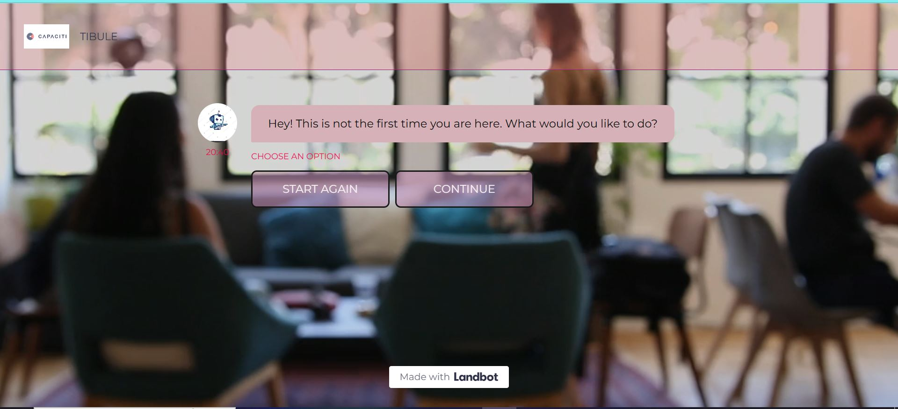
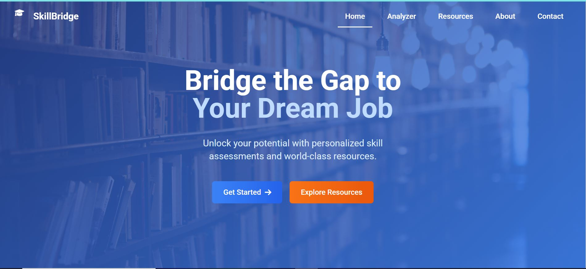
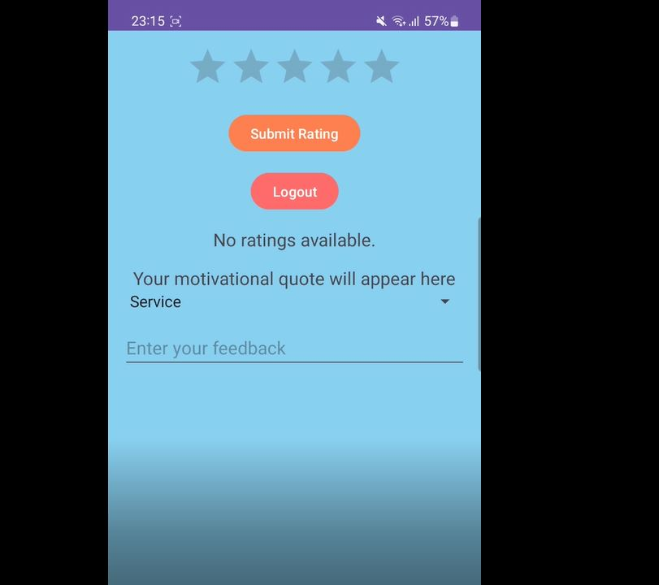

IT Graduate | Aspiring Web Developer
I am a recent graduate with a Bachelor of Science degree in Information Technology and an aspiring web developer, passionate about web development, cloud computing, and networking. With hands-on experience in Python, Java, C++, JavaScript, HTML, and CSS, I have applied these skills in real-world projects through coursework and a Python development internship at Cognifyz Technologies. I enjoy solving complex problems with a detail-oriented approach and am eager to contribute to innovative tech solutions while continuously learning and growing.
📄 Download My CVMerchandiser (Part Time) | Cape Town and surrounding areas – South Africa
Dec 2017 – Feb 2019
Traffic Surveyor | Cape Town - South Africa
Sep 2017 – Nov 2017
Developed a chatbot on Landbot using no-code AI tools to assist users in navigating information about the CapaCiTi program. The chatbot successfully provided instant access to program information, reducing common user queries and significantly improving the user onboarding experience.
 View ProjectA web-based system that allows users, including students, employees, and community members - to request digital learning resources, such as PDFs, training slots, mentorship, and course enrollments. This user-friendly system streamlined the request process, reducing administrative overhead and increasing engagement with available training materials.
A user-friendly Android application designed to facilitate easy service rating and feedback collection. This app empowers users to provide star ratings, written feedback, and categorise their experience by service type. Upon submitting a rating, users receive an uplifting motivational quote, enhancing their interaction with the app.
Email: tashreeqengelbrecht69@gmail.com
LinkedIn: My LinkedIn
Phone: 0659209741